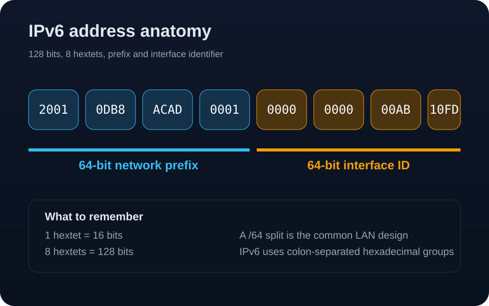
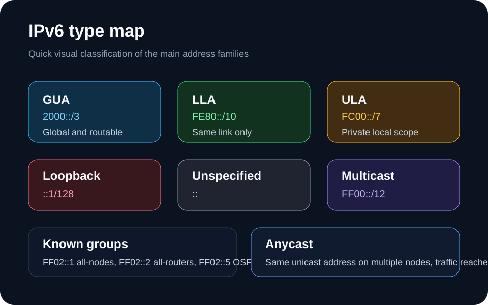
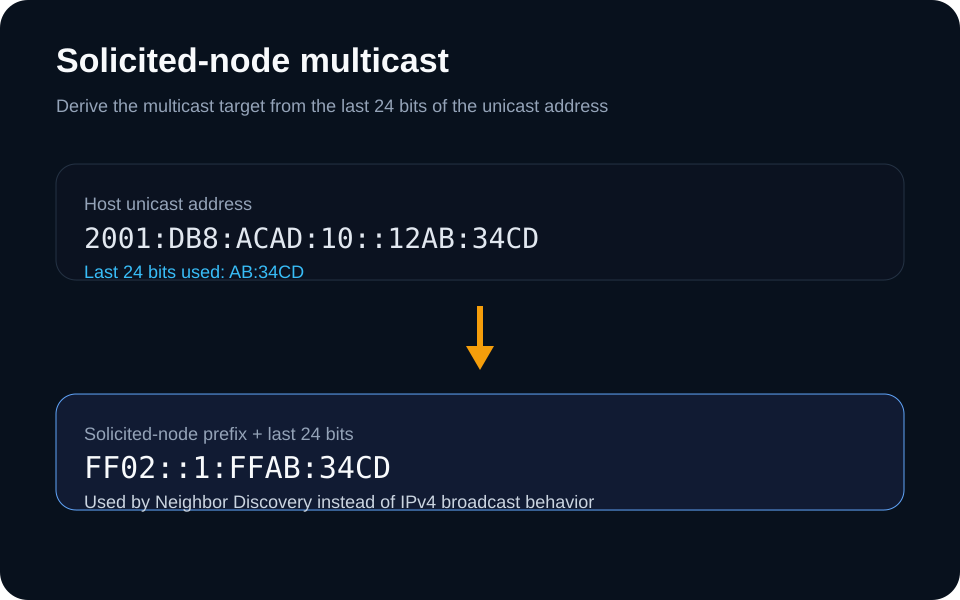
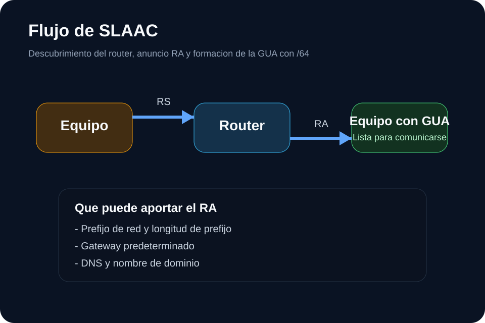
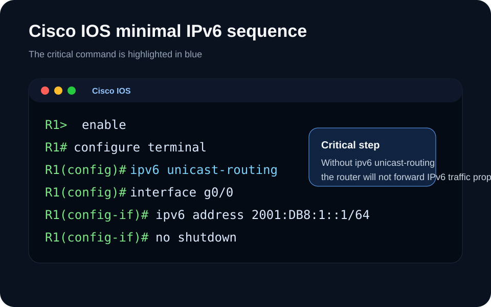

Panel DUA y control del estudio
Este panel añade accesibilidad real: contraste alto, tamaño de letra, modo fácil, vista solo práctica y lectura en voz alta por secciones.
Resumen fácil
Si solo memorizas tres ideas hoy: IPv6 usa 8 hextetos, la LAN recomendada es /64 y
ipv6 unicast-routing es el comando crítico en Cisco IOS.
Biblioteca visual en imagenes
Estas laminas ya no dependen del render del SVG embebido. Si algun diagrama te cuesta ver, usa esta galeria de imagenes directas del tema.



FF02::1:FFxx:xxxx.


ipv6 unicast-routing.
1. Fundamentos: de IPv4 a IPv6
El workbook empieza comparando 32 bits frente a 128 bits y deja claro que antes de configurar, primero debemos saber leer bien la dirección.
Resumen fácil
IPv4 tiene 32 bits. IPv6 tiene 128 bits. Una dirección IPv6 completa tiene 8 hextetos y 32 símbolos hexadecimales.
Idea central
- IPv4 se apoya en NAT y ya no escala bien para el crecimiento actual.
- IPv6 amplía el espacio de direcciones y normaliza el uso de prefijos y autoconfiguración.
- El material insiste en que el estudiante domine escritura, clasificación y lógica de red.
Reglas mínimas
- 1 hexteto = 16 bits.
- 8 hextetos = 128 bits.
- Los grupos se separan con
:. - La longitud de prefijo se expresa con
/n.
Imagen 1: anatomía de una dirección IPv6
Un solo diagrama para ubicar hextetos, prefijo y porción de interfaz.
Prefijo
ID de interfaz
Imagen 2: capacidad relativa IPv4 vs IPv6
La diferencia conceptual se vuelve más visible con una escala simple.
2. Representación y compresión correcta
El workbook insiste en dos reglas: quitar ceros a la izquierda y usar :: solo una vez cuando hay una corrida continua de hextetos 0000.
Resumen fácil
Regla 1: quita ceros a la izquierda. Regla 2: usa
:: solo una vez. Si la repites, la dirección queda inválida.
Regla 1: ceros a la izquierda
000A pasa a A, 0001 pasa a 1,
y así con todos los hextetos. Esta regla no cambia la longitud lógica del grupo.
Regla 2: compresión con ::
Cuando hay una corrida continua de grupos
0000, podemos sustituirla
por ::, pero solo una vez por dirección.
Imagen 3: paso a paso de compresión
Visualización del ejemplo largo hasta su forma corta.
Imagen 4: dirección válida vs inválida
Comparación rápida para evitar el error más común del estudiante.
3. Prefijos, asignación global y DNS AAAA
El material no solo habla de direcciones; también toca /64, espacio 2000::/3, rol de la IANA, de los RIR y el uso de nslookup para dominios públicos IPv6.
Resumen fácil
La LAN típica usa /64. Las GUA viven dentro de 2000::/3. La IANA delega bloques a los RIR. El registro DNS que buscas para IPv6 es AAAA.
Imagen 5: división /64
La recomendación /64 se entiende mejor con una barra simple de 64 + 64 bits.
Imagen 6: camino IANA → RIR → operador
Resumen visual de la asignación global mencionada en el workbook.
Imagen 7: consulta DNS AAAA
El material sugiere usar nslookup con dominios públicos para practicar IPv6 real.
PowerShell / nslookup
# Consulta IPv6 publica por registro AAAA
nslookup
set type=AAAA
cisco.com
netflix.com
facebook.comLa idea no es memorizar los resultados exactos, sino reconocer que IPv6 público se publica en registros AAAA.
4. Todos los tipos principales de IPv6 del material
Aquí se consolida la taxonomía del workbook: unicast global, link-local, unique local, loopback, no especificada, IPv4 integrada, multicast conocida, multicast transitoria, solicited-node y anycast.
Resumen fácil
GUA = pública/enrutable. LLA = misma LAN. ULA = local privada. Multicast = grupos. Anycast = mismo destino lógico, llega al nodo más cercano.
Imagen 8: árbol rápido de clasificación
Una guía visual para mirar una dirección y clasificarla antes de leer más.
Mostrando todas las tarjetas y la tabla completa.
Unicast global (GUA)
2000::/3
Direcciones enrutables en Internet IPv6, equivalentes conceptuales a las públicas IPv4.
Global y enrutableLink-local (LLA)
FE80::/10
Obligatoria por enlace. Sirve para comunicarse dentro de la misma LAN y no se enruta globalmente.
Mismo enlaceUnique local (ULA)
FC00::/7
Para direccionamiento local limitado. Similar al concepto de privado en IPv4, pero no pensado para NAT tradicional.
Privada localLoopback
::1/128
Prueba interna del host. Equivalente funcional al 127.0.0.1 de IPv4.
Auto-pruebaNo especificada
::
Se usa como origen para indicar ausencia de dirección configurada.
Sin direcciónIPv4 integrada
Usa los 32 bits inferiores para transportar una IPv4 dentro de una dirección IPv6.
TransiciónMulticast general
FF00::/12
Una dirección multicast nunca puede ser origen. Sustituye la idea de broadcast general de IPv4.
GruposMulticast permanente
Indicada por la bandera 0. Incluye grupos bien conocidos asignados por IANA.
Multicast transitoria
Indicada por la bandera 1, como ff10::/12.
All-nodes
FF02::1
Todos los nodos IPv6 del enlace local.
Grupo conocidoAll-routers
FF02::2
Todos los routers IPv6 del enlace local.
Grupo conocidoOSPFv3
FF02::5
Grupo de todos los routers OSPFv3.
RoutingEIGRP para IPv6
FF02::A
Grupo multicast de todos los routers EIGRP para IPv6.
RoutingSolicited-node multicast
FF02:0:0:0:0:1:FF00::/104
Se crea automáticamente a partir de una unicast para resolver capa 3 a capa 2.
VecindadAnycast
Sin prefijo exclusivo. Reutiliza rango unicast y el tráfico llega al nodo más cercano.
Nodo más cercano| Tipo | Prefijo o ejemplo | Ámbito | ¿Enrutable? | Uso principal |
|---|---|---|---|---|
| GUA | 2000::/3 |
Internet | Sí | Dirección pública IPv6 |
| LLA | FE80::/10 |
Mismo enlace | No globalmente | Vecindad, gateway local, NDP |
| ULA | FC00::/7 |
Sitio local | No globalmente | Direcciones internas |
| Loopback | ::1/128 |
Host local | No | Prueba interna |
| No especificada | :: |
Host local | No | Ausencia de dirección |
| Multicast | FF00::/12 |
Grupo | Según ámbito | Comunicación uno-a-muchos |
| Anycast | Mismo rango que GUA | Red / Internet | Sí | Llegar al nodo más cercano |
5. Multicast, solicited-node y anycast
El workbook insiste en que multicast nunca es dirección de origen, que solicited-node reemplaza el broadcast clásico y que anycast se enruta hacia el nodo más cercano.
Resumen fácil
FF02::1 = todos los nodos. FF02::2 = todos los routers.
La solicited-node sale de una unicast. Anycast usa la misma dirección en varios nodos y gana el más cercano.
Imagen 9: grupos multicast conocidos
Un vistazo rápido a los grupos que sí conviene memorizar.
Imagen 10: construcción de solicited-node
El mecanismo clave que reemplaza el broadcast de IPv4 para resolver capa 3 a capa 2.
Imagen 11: lógica anycast
Misma dirección lógica, varios servidores, llega el más cercano por enrutamiento.
6. SLAAC, RS, RA y NDP
La parte dinámica del material conecta el prefijo /64 con la autoconfiguración real: el host envía RS, el router responde con RA y los datos del RA guían la construcción de la GUA.
Resumen fácil
Host = RS. Router = RA. El RA puede dar prefijo, gateway y DNS. SLAAC necesita /64 y usa 64 bits para la interfaz.
Qué memorizar
- RS lo envía el host para descubrir routers.
- RA lo envía el router para informar sobre la red.
- El RA puede aportar prefijo, gateway y datos DNS/dominio.
- El ID de interfaz puede surgir por EUI-64 o generación aleatoria.
Relación con vecindad
- La solicited-node multicast se usa para resolución de capa 3 a capa 2.
- Es una aproximación más eficiente al broadcast clásico de IPv4.
- La LLA sigue siendo clave porque todo comienza en el mismo enlace.
Imagen 12: flujo RS → RA → GUA
Secuencia resumida para que el estudiante entienda qué ocurre realmente en la LAN.
Imagen 13: qué puede llevar un RA
Un resumen visual de la información citada en el workbook.
Imagen 14: host, router y solicited-node en la misma escena
La vecindad IPv6 completa: el host envía RS, aprende por RA y resuelve vecinos con solicited-node multicast.
7. Cisco IOS: mínimo viable y error crítico
La idea fuerte del workbook es operativa: si no existe ipv6 unicast-routing, el router no enruta IPv6 globalmente y no apoya bien el proceso de anuncios.
Resumen fácil
El comando más importante es
ipv6 unicast-routing. Si el host no pasa de la LAN, esa revisión va primero.
Checklist mínima
Cisco IOS
R1> enable
R1# configure terminal
R1(config)# ipv6 unicast-routing
R1(config)# interface g0/0
R1(config-if)# ipv6 address 2001:DB8:1::1/64
R1(config-if)# no shutdownQué revisar cuando algo falla
- ¿Está activo
ipv6 unicast-routing? - ¿La interfaz tiene dirección IPv6 correcta?
- ¿La interfaz está levantada?
- ¿El host tiene LLA y aprendió el prefijo /64 correcto?
Imagen 15: flujo mínimo de configuración
8. Glosario rápido
Este bloque sirve como soporte DUA: términos cortos, claros y reutilizables durante toda la práctica.
GUA
Dirección unicast global, enrutada en Internet IPv6. Rango: 2000::/3.
LLA
Dirección link-local. Existe por enlace, no se enruta globalmente. Rango: FE80::/10.
ULA
Dirección unique local. Útil dentro de un sitio o un conjunto limitado de sitios.
SLAAC
Autoconfiguración sin estado. Usa /64 y se apoya en mensajes RA.
RS
Router Solicitation. Lo envía el host para descubrir routers IPv6.
RA
Router Advertisement. Lo envía el router con prefijo, gateway y otros datos.
Solicited-node
Multicast derivada de una unicast para resolución de vecindad de capa 3 a capa 2.
Anycast
Misma dirección lógica en varios nodos; el tráfico llega al más cercano.
9. Qué debes memorizar para CCNA
Bloque final de repaso duro: lo mínimo que sí conviene retener sin mirar apuntes antes del examen o de la práctica en clase.
:: una sola vez./64 separa 64 bits de red y 64 bits de interfaz para SLAAC.2000::/3, FE80::/10, FC00::/7, ::1/128, ::, FF00::/12.FF02::1, FF02::2, FF02::5, FF02::A y solicited-node FF02:0:0:0:0:1:FF00::/104.ipv6 unicast-routing.10. Repaso rápido
Tarjetas breves para memorizar rangos, grupos y conceptos clave antes de entrar a la práctica grande.
11. Práctica intensiva
La práctica ahora combina selección única, selección múltiple, texto y orden. Se mantiene privada, local y exportable a PDF solo cuando todo el recorrido fue revisado.
Estudiante: —
Grupo: —
Pendiente de iniciar
Reporte de práctica resuelta
Este reporte se diseñó para exportación a PDF. Resume pregunta, respuesta del estudiante, respuesta esperada y explicación breve para repaso final.
Al pulsar Exportar PDF, el navegador abrirá la impresión. Desde esa ventana puedes guardar la práctica resuelta como PDF.